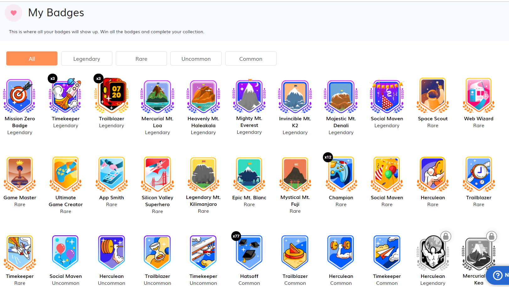

About
My passion
My work
Inspiration
Contact
My Favorite hobby is
PLAYING
I love learning!
BADMINTON 👇
MY PASSION
I love to play badminton,and enjoy playing it.In my future,I would like to pursue badminton as my career.
A video of agility multishuttle drills
Your browser does not support the video tag.
About

My hobbies are to , paint,draw,sketch,and code!
Here is my Favourite book and reviews on it
Click here to download my favorite book of all time
I also love painting, drawing and singing!